* 该例程针对“TX
我们举例采用比较传统的51系列单片机为例，芯片选用STC
一、单片机部分的驱动程序编写
单片机程序可以采用C语言或者汇编语言去编写，常用的编辑环境为Keil。
Keil C51 软件是众多单片机应用开发的优秀软件之一，它集编辑，编译，仿真于一体，支持汇编,PLM 语言和 C 语言的程序设计，界面友好，易学易用。
下面介绍Keil C51软件的使用方法:
进入 Keil C51 后，屏幕如下图所示，几秒钟后出现编辑界面。
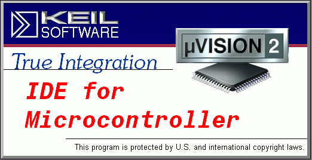
启动Keil C51时的屏幕
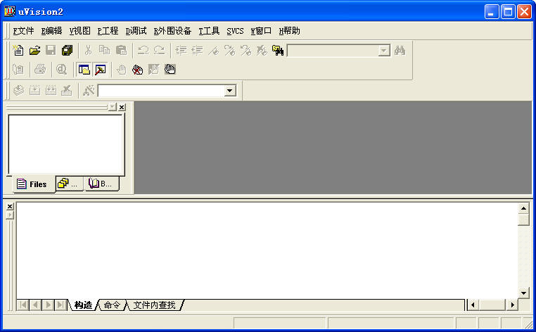
进入Keil C51后的编辑界面
简单程序的调试
学习程序设计语言、学习某种程序软件，最好的方法是直接操作实践。下面通过简单的编程、调试，引导大家学习Keil C51软件的基本使用方法和基本的调试技巧。
1)建立一个新工程
单击“工程”菜单，在弹出的下拉菜单中选中“新建工程”选项。
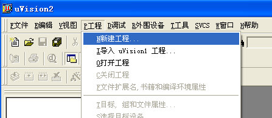
2)然后选择你要保存的路径,输入工程文件的名字,比如保存到C51目录里,工程文件的名字为C51，如下图所示,然后点击保存。
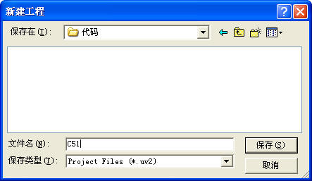
3)这时会弹出一个对话框，要求你选择单片机的型号，你可以根据你使用的单片机来选择，keil c51几乎支持所有的51核的单片机，我们现在采用的是STC
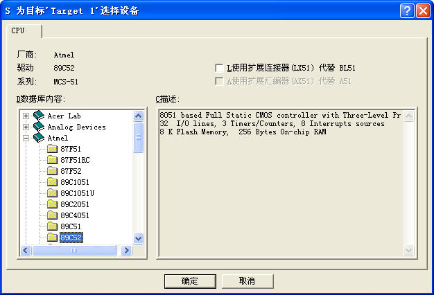
4)完成上一步骤后，屏幕如下图所示 。
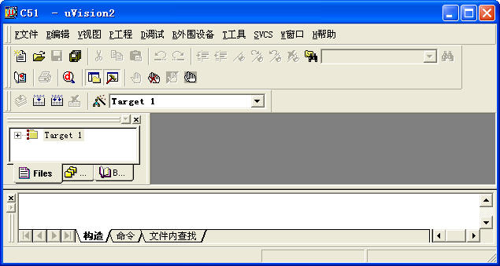
到现在为止，我们还没有编写一句程序，下面开始编写程序。
5)在下图中，单击“文件”菜单，再在下拉菜单中单击“新建”选项
。
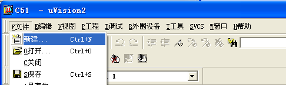
新建文件后屏幕如下图所示。
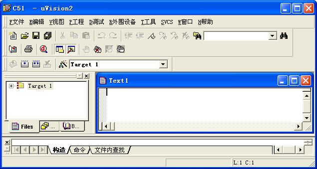
此时光标在编辑窗口里闪烁，这时可以键入用户的应用程序了，但建议首先保存该空白的文件，单击菜单上的“文件”，在下拉菜单中选中“另存为”选项单击，屏幕如下图所示，在“文件名”栏右侧的编辑框中，键入欲使用的文件名，同时，必须键入正确的扩展名。注意，如果用Ｃ语言编写程序，则扩展名为(.c)；如果用汇编语言编写程序，则扩展名必须为(.asm)，然后，单击“保存”按钮。
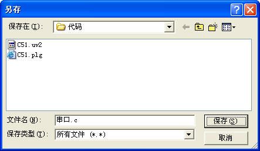
6)回到编辑界面后，单击“Target 1”前面的“＋”号，然后在“Source Group
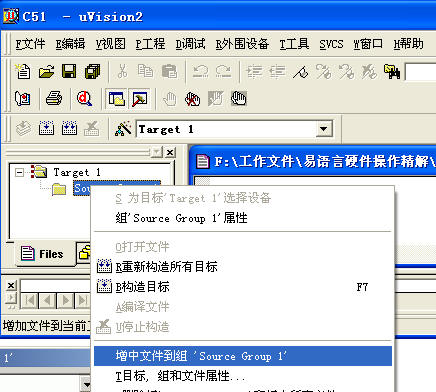
然后单击“增加文件到组 ‘Source Group 1’” 屏幕如下图所示。
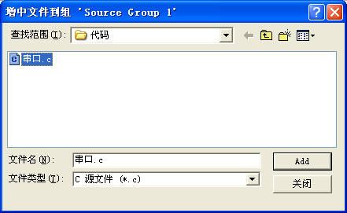
选中 串口.c，然后单击“Add ”屏幕好下图所示。
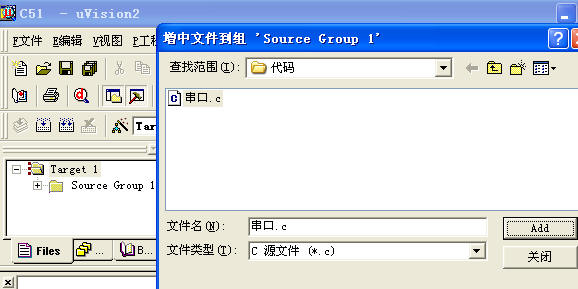
注意到“Source Group
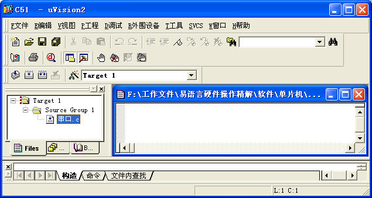
7)现在，请输入如下的C语言源程序:
#include <reg52.h> //包含单片机操作头文件
unsigned char flag,tmp;//定义变量
void main()
{
REN=1;
TMOD=0x20;//定时器工作方式
TH1=0xfd;//设置串行口波特率9600
TL1=0xfd;//设置串行口波特率9600
TR1=1;//启动计时器1(启动串行口)
SM0=0;
SM1=1;
EA=1;////CPU开中断
ES=1;////CPU开中断
while(1)//设置一个循环
{
if(flag==1)//代表收到了数据
{
ES=0;
flag=0;
P1=tmp;//点亮发光二极管
SBUF=tmp;//把值重新写入缓冲区，相当于从串口发送数据，电脑就可以接收到数据
while(!TI);
TI=0;
ES=1;
}
}
}
void ser() interrupt 4 //中断，等待数据到来触发
{
RI=0;
tmp=SBUF;//取得数据到变量
flag=1;
}
在输入上述程序时，读者已经看到了事先保存待编辑的文件的好处了吧，即Keil c51会自动识别关键字，并以不同的颜色提示用户加以注意，这样会使用户少犯错误，有利于提高编程效率。程序输入完毕后，如下图所示
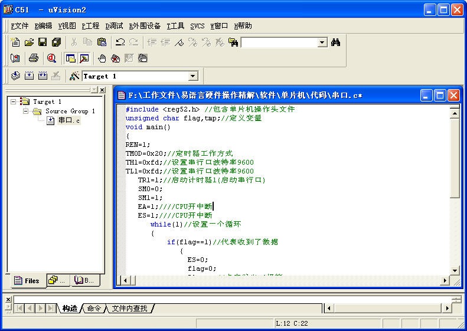
8)在上图中，单击“工程”菜单，再在下拉菜单中单击“目标'Target1' 属性”选项，屏幕如下所示。
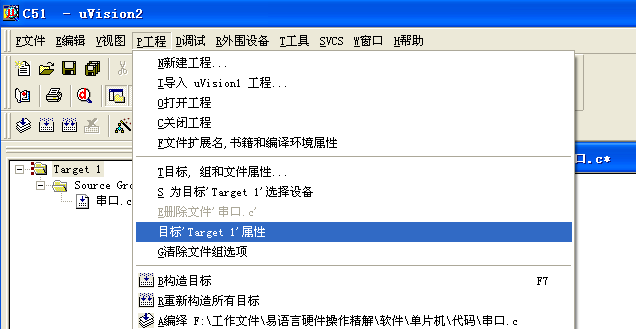
9)在弹出窗口中，切换到输出选择夹，选中“生成 HEX 文件”，因为单片机烧录中需要hex文件或者bin文件。
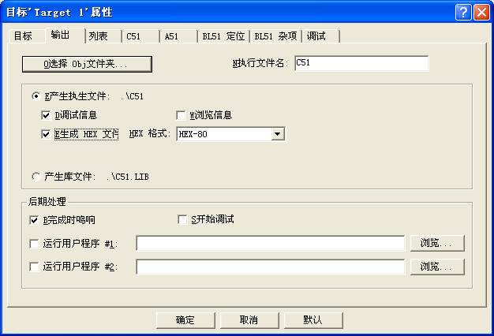
10）单击“工程”菜单，再在下拉菜单中单击“重新构造所有目标”，显示如下图。
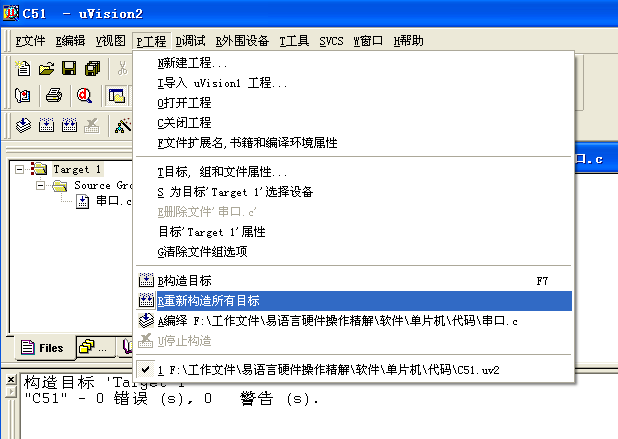
11）编译后显示如下的调试信息，可以看到已经产生了hex文件。
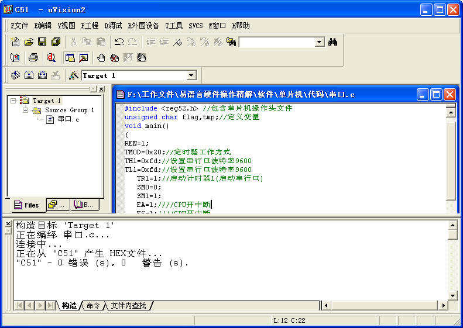
12）hex文件在如下图的位置显示，下面就可以使用工具将生成的文件写入单片机了。
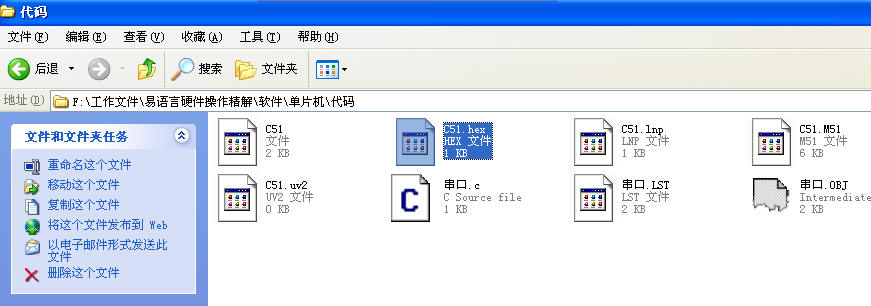
13）STC系列的单片机程序下载工具如下图，双击运行选中的下载程序主文件。
14）选择单片机类型STC
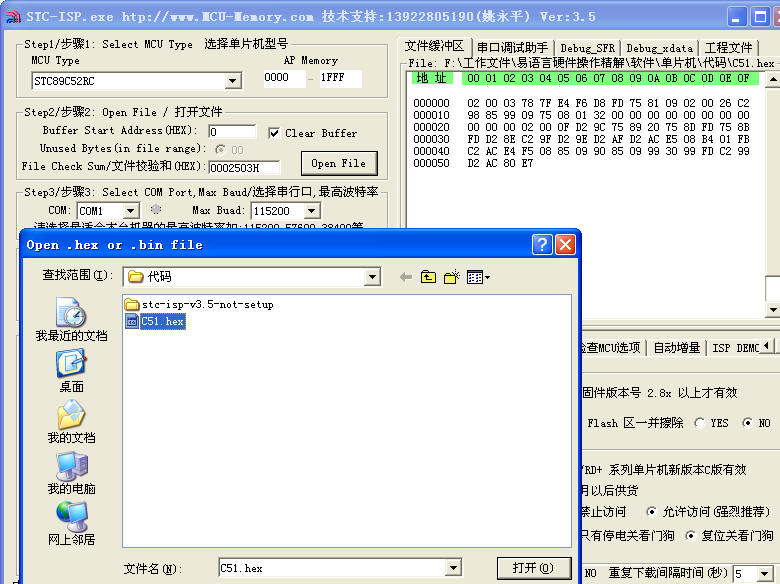
15）然后需要先确定关闭单片机电源，因为我们采用的单片机需要冷启动，之后点击“Download/下载”按钮，如下图。
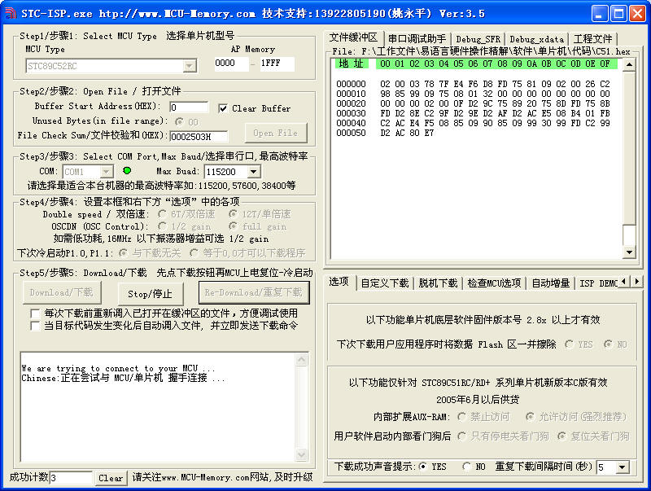
16）然后打开单片机电源，程序开始下载，下载后如下图，到这里，单片机部分程序编写结束，之后我们将进入控制端即易语言程序的编写。
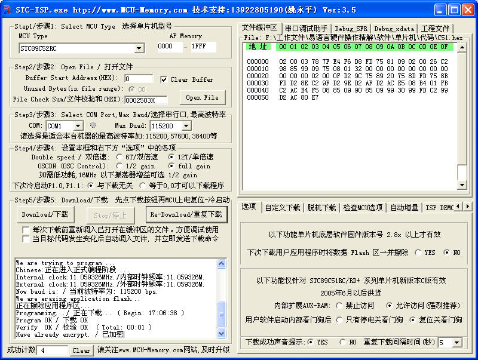
二、易语言程序编写
1）易语言和单片机通信，我们采用串口方式，在易语言中，我们选择端口组件，如下图鼠标按下并且显示提示的组件。
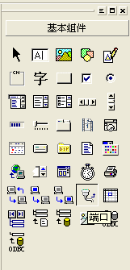
2）之后我们设计一个需要的界面，界面中我们计划发送两个数据序列，分别为10101010和01010101，用来控制单片机上的8个发光二极管的发光和关闭（因为在单片机中，通过给对应的管脚发送0和1来控制高低电平，也就可以控制线路的通断，达到控制的效果），同时我们希望用程序来模拟显示出当前发光二极管的工作状态，于是我们在程序动态生成了8个标签，分别代表8个发光二极管，在我们的程序中，发送数据到单片机，我们让单片机把收到的数据完整地返回给计算机，这样计算机收到的数据和单片机收到的数据一致，就可以完全仿真出当前单片机的工作状态，我们规定标签背景为红色代表对应的发光二极管发光，界面上放置有端口组件和两对编辑框和发送按钮以及模拟标签，端口组件的属性设置可以保持默认，即端口号为1，波特率为9600，这些设置需要根据计算机的硬件控制，比如串口线连接在那个串口上了，默认连接在计算机的第一个串口上则设置为1，波特率的设置需要根据单片机的晶振计算，同时单片机代码和计算机的代码中波特率设置要一致，本例中统一设置为9600，设计如下的界面。
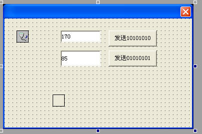
3）通过如下代码，可以生成8个模拟标签。
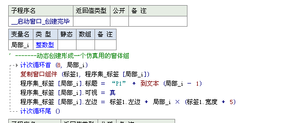
4）运行后，生成标签如下图。
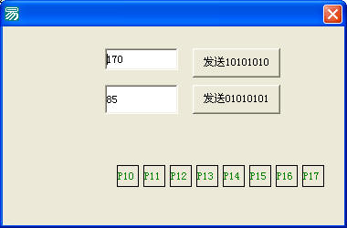
5）下面我们就要编写发送数据的代码，代码如下，分别通过两个按钮发送两个整数170和85，因为170对应的二进制为10101010，85对应为01010101，易语言发送数据无法直接发送二进制，所以发送对应的十进制数据即可，发送代码如下。
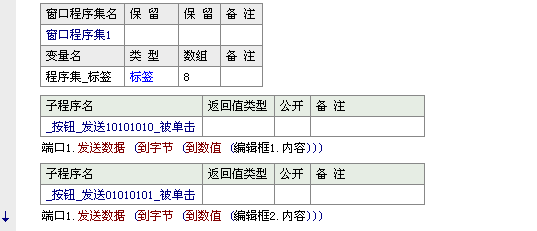
6）现在我们其实已经可以运行程序，通过点击两个按钮发送数据，可以看到单片机上的发光二极管有点亮的过程，如图。
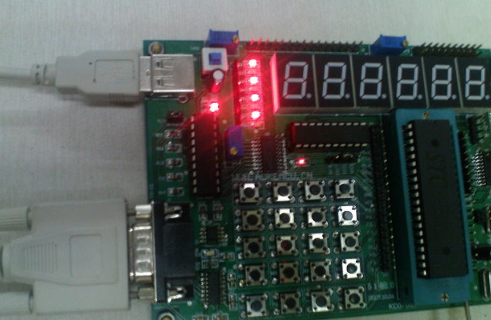
7）此时虽然已经可以发送数据，但是计算机程序还没有编写接收数据及其仿真显示，下面我们需要编写如下代码以实现数据接收和模拟显示，代码大家自行分析即可，其中用到了一个进制转换模块，模块是易语言自带的，目的是把收到的十进制数据转换为二进制便于模拟显示之用。
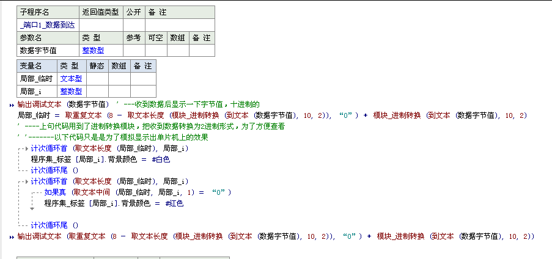
8）之后我们再次运行程序，就可以看到数据接收的调试输出结果和模拟仿真的结果了，发送170和85之后的结果显示分别在下图有所体现。
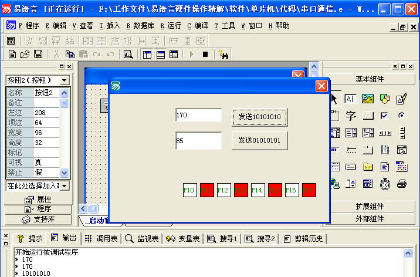
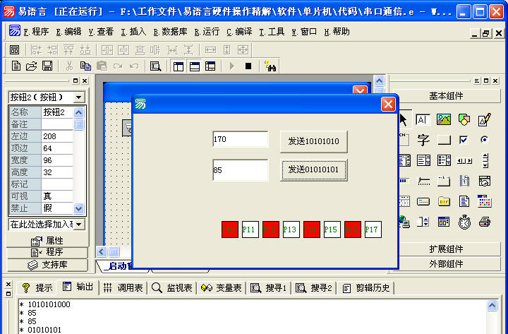
9）至此我们的程序和演示编写完毕，大家可以在此基础上继续利用单片机试验板上的资源充分练习其他功能，但是计算机和单片机的通信过程也就不外乎上面的办法，只是需要自己制定一些控制规则，可以控制单片机上的数码管、继电器、USB芯片等。
|
版权所有 大连大有吴涛易语言软件开发有限公司 电话:86-0411-88995831 传真:86-0411-88995834 |